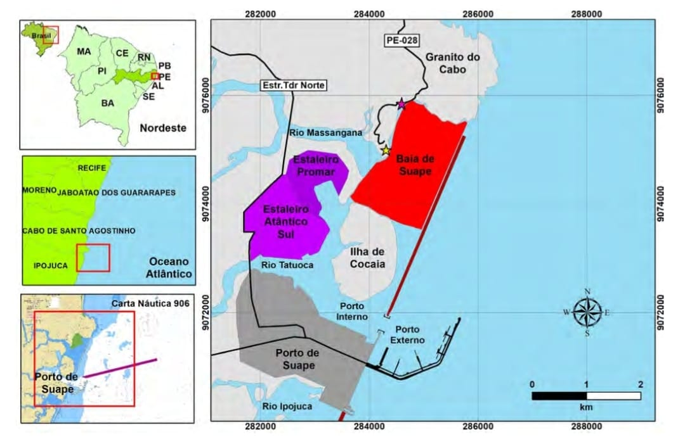

O Projeto
Objetivos
Esta pesquisa visa avaliar os impactos do Porto de Suape na qualidade da água costeira através de bioindicadores, com três objetivos principais:
- Identificar espécies-chave sensíveis às atividades portuárias
- Estabelecer correlações entre parâmetros físico-químicos e respostas biológicas
- Propor protocolos de monitoramento adaptados a portos tropicais
Metodologia
1. Amostragem
Coleta trimestral em 5 estações estratégicas no entorno do porto
2. Análise Laboratorial
Identificação taxonômica e análises de metais pesados
3. Processamento de Dados
Índices bióticos (AMBI) e estatística multivariada
Área de Estudo

Fonte: Balanço Sedimentar da Baía de Suape (PE) entre os Anos de 1994 e 2007: Consequências Ambientais
Estações de Monitoramento:
- E1 - Baia de Suape
- E2 - Estaleiro Atlântico Sul
- E3 - Estaleiro Promar
- E3 - Porto de Suape